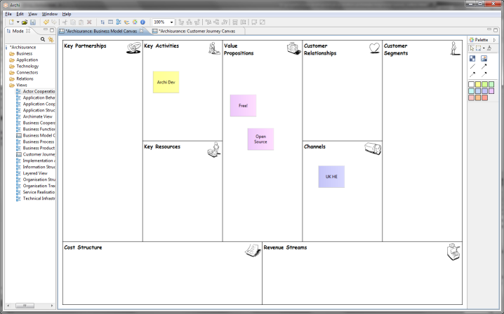

The Canvas Modelling Toolkit is an extension to Archi somewhat akin to the Sketch View that provides the tools for you to create and edit a "Canvas" such as the Business Model Canvas2. With the Canvas Modelling Toolkit you can design and create re-usable Canvas Templates to share with colleagues or simply or you can use it as a pre-design tool to sketch out ideas and models. You can also link to other Views in your model so you could, for example, link from an ArchiMate View to a Business Model Canvas View to provide a Business Plan.

The Business Model Canvas in Archi